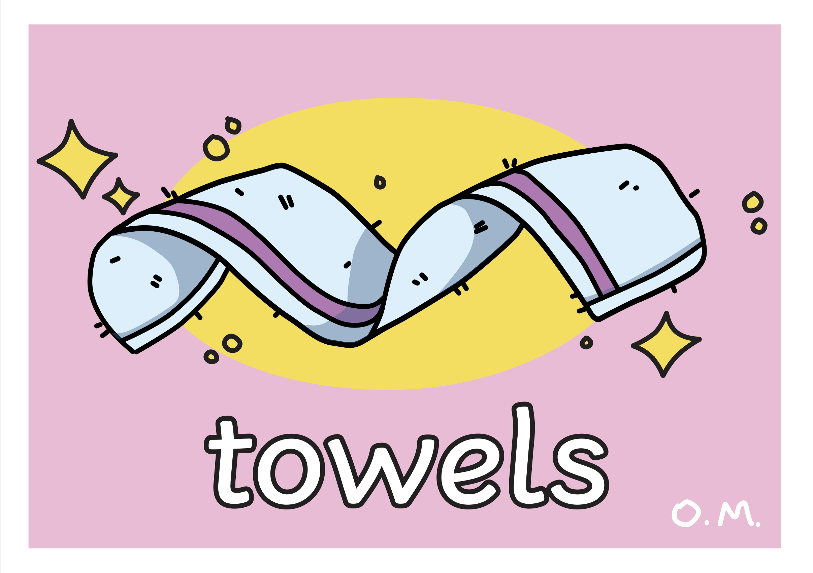

This was a decently simple job where the task was to remake an asset that the catering teacher no longer had the files to. This taught me a bit about tracing and following the feel of something rather than the exact lines.
